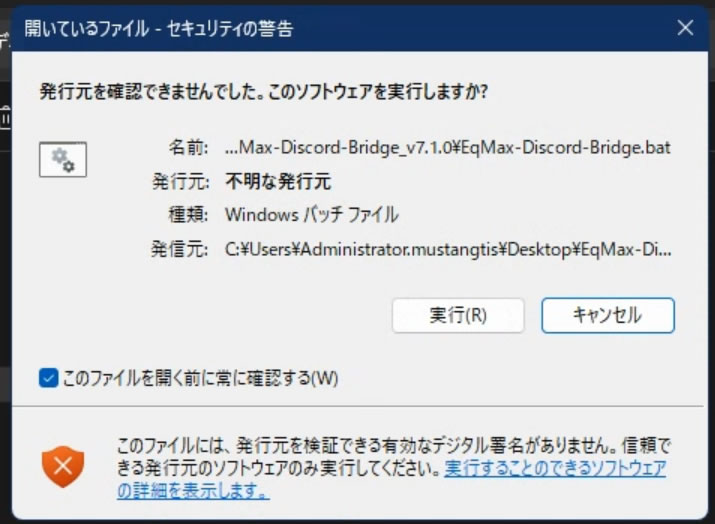
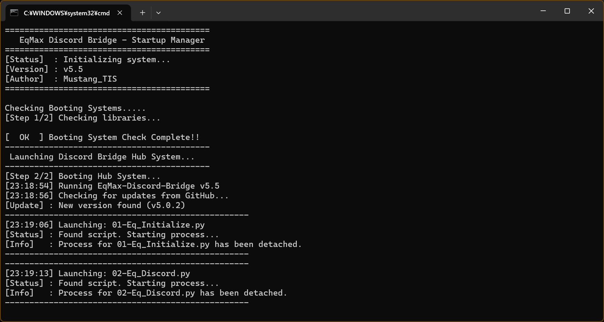

アプリの起動
フォルダ内の EqMax-Discord-Bridge.bat を実行してください。

※デジタル署名エラーが出ますが、無視して実行してください。
「このファイルを開く前に常に確認する」のチェックを外すと、次回以降警告は非表示になります。
プロンプト起動後、必要なライブラリのインストールが自動で行われます。
起動時の画面表示

正常に起動すると、左記のようにシステムチェックおよび各スクリプト（01-Eq_Initialize.py等）の読み込みが開始されます。
※黒い画面が表示されますが、正常な挙動です。処理が完了し、自動的にプロセスがデタッチ（バックグラウンド移行）されるまでそのままお待ちください。
ハブシステムの各機能

- ① バージョン情報
- 更新がある時はバージョンアップ通知が表示されます。
- ② ヘルプ・ガイドの表示
- このHTMLマニュアルを起動します。
- ③ EqMax 初期設定
- EqMax本体を連携用に最適化します。
- ④ Discord連携実装
- SNS通知用アプリをインストールします。
- ⑤ ログ・画像クリーナー
- 不要なキャッシュやログを一括削除します。
- ⑥ EqMax 安定化アプリ
- フリーズやメモリリークを検知し、自動再起動を行う監視ツールです。
- ⑦ EqMax 初期化処理
- 全ての設定をリセットし、インストール直後の状態に初期化します。